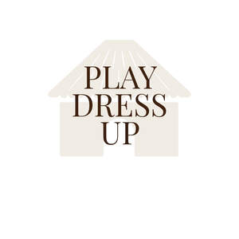

Trade Mark Journal No.2026/011 13 March 2026
UK00004345193 25 February 2026 (41)

- Class 41
- Sporting event organization; Special event planning; Special event planning consultation; Organization of sporting events; Organising of sporting events; Organising sporting events; Hosting of entertainment events; Organisation of sporting events; Organization of entertainment events; Organization of sporting events and competitions; Presentation of live entertainment events; Organising community sporting events; Organisation of entertainment events; Organization of dancing events; Ticketing and event booking services; Dance events; Organisation of sporting events and competitions; Provision of sporting events; Organization of cosplay entertainment events; Production of sporting events; Ice-skating events (Organising of -); Arranging of sporting events; Organisation of cultural events; Ticket information services for sporting events; Organisation of esports events; Organising of sports events; Organisation of musical events; Organising dancing events; Timing of sports events; Sports events (Timing of -); Gymnastics events (Organising of -); Organising gymnastics events; Organisation of vehicle racing events; Master of ceremony services for parties and special events; Time recording services for sporting events; Organizing community sporting and cultural events; Publication of calendars of events; Organising of recreational events; Organising community cultural events; Organisation of educational events; Organisation of cycling events; Organisation of entertainment and cultural events; Handicapping for sporting events; Entertainment provided during intervals of sporting events; Organising of sporting events, competitions and sporting tournaments; Organising events for entertainment purposes; Ticket reservation for cultural events; Organising of football events; Organization of sporting events and competitions, involving animals; Organisation of automobile racing events; Organization of animal racing events; Rental of equipment for use at sporting events; Provision and management of sporting events; Organising of sports competitions and events; Organisation of automobile rallies, tours and racing events; Ticket reservation and booking services for sporting events; Organising events for cultural purposes; Ticket information services for esports events; Production of sporting events for film; Conducting of entertainment events; Production of esports events; Arranging of cultural events; Ticket procurement services for sporting events; Organisation of sporting competitions and sports events; Organization of events for cultural purposes; Organisation of events for cultural, entertainment and sporting purposes; Arranging for ticket reservations for shows and other entertainment events; Arranging of educational events; Entertainment services in the nature of sporting events; Ticket reservation and booking services for esports events; Booking of seats for entertainment events; Organizing cultural and arts events; Production of live entertainment events; Providing will-call ticket services for entertainment, sporting and cultural events; Production of sporting events for television; Conducting of live entertainment events; Wedding celebrations (Organisation of entertainment for -); Management of events for sporting clubs; Conducting of live esports events; Advisory services relating to the organisation of sporting events; Services for the organisation of football events; Horse jumping events (Organising of -); Disc jockeys for parties and special events; Provision of information relating to sporting events; Conducting of sports events; Ticket reservation and booking services for cultural events; Ticket reservation and booking services for entertainment events; Rental of equipment for use at gymnastic events; Ticket procurement services for entertainment events; Rental of equipment for use at athletic events; Disc jockey services for parties and special events; Conducting of educational events; Musical events (Arranging of -); Arranging of musical events; Entertainment services provided during intervals at sports events; Booking of sports personalities for events (services of a promoter); Conducting of live sports events; Organisation of stock car racing events; Booking of seats for shows and sports events.
Alison Cole